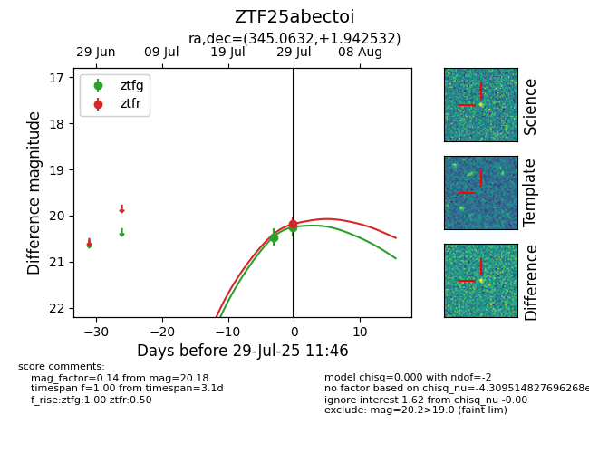

Target ZTF25abectoi at 2025-07-29 11:46, see:
FINK: fink-portal.org/ZTF25abectoi
Lasair: lasair-ztf.lsst.ac.uk/objects/ZTF25abectoi
ALeRCE: alerce.online/object/ZTF25abectoi
alt names
ZTF25abectoi (ztf,fink)
coordinates:
equatorial (ra, dec) = (345.0632,+1.94253)
galactic (l, b) = (75.8461,-50.47840)
photometry
last ztfg=20.25, ztfr=20.18
2 ztfg, 1 ztfr detections
